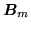
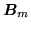

Variance MLLR (MLLRVAR and MLLRCOV)
There are two standard forms of linear adaptation of the variances. The first
is of the form
where
 is the linear transformation to be estimated and
 is the inverse of the Choleski factor of
,
so
is the linear transformation to be estimated and
 is the inverse of the Choleski factor of
,
so
and
This form of transform results in an effective full covariance matrix if
the transform matrix
is full. This makes likelihood calculations
highly inefficient. This form of transform is only available with a
diagonal transform and in conjunction with estimating an MLLR transform. The
MLLR transform is used as a parent transform for estimating
.
This form of transform is referred to in the code as MLLRVAR.
An alternative more efficient form of variance transformation is also available.
Here, the transformation of the covariance matrix is of the form
where
is the  covariance transformation matrix.
This form of transformation, referred to in the code as MLLRCOV
can be efficiently implemented as a transformation of the means and
the features.
covariance transformation matrix.
This form of transformation, referred to in the code as MLLRCOV
can be efficiently implemented as a transformation of the means and
the features.
where
.
Using this form it is possible to estimate and efficiently apply full transformations.
MLLRCOV transformations are normally estimated using MLLRMEAN transformations
as the parent transform.
Back to HTK site
See front page for HTK Authors